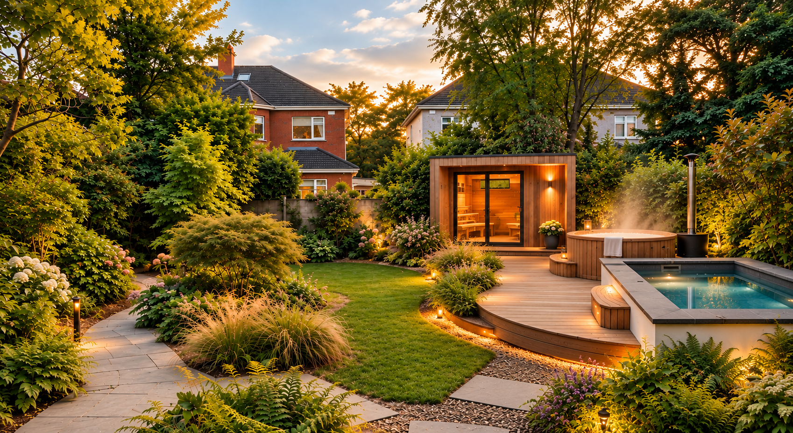
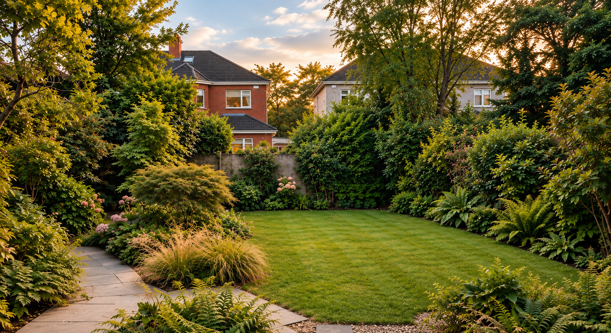
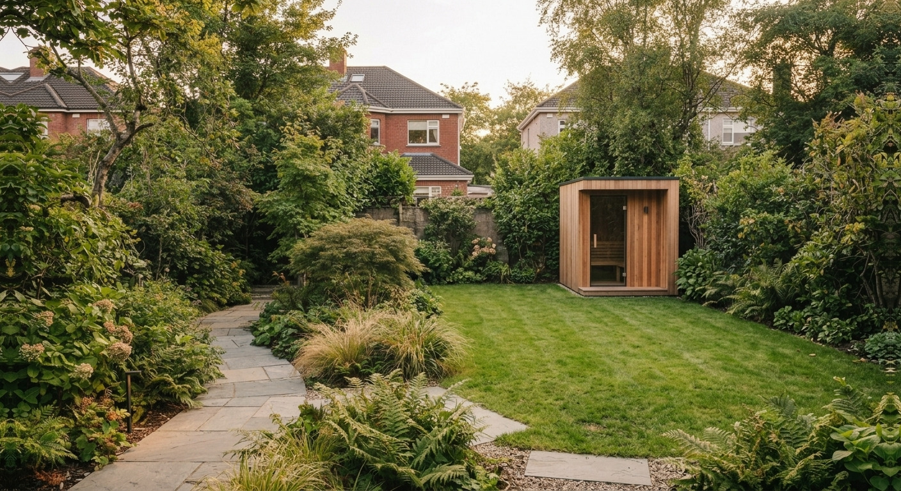
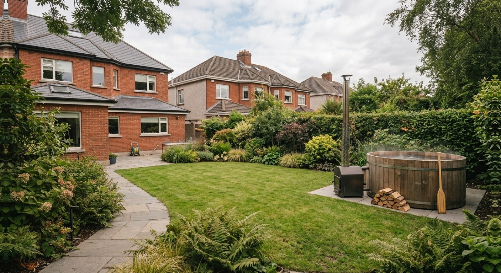
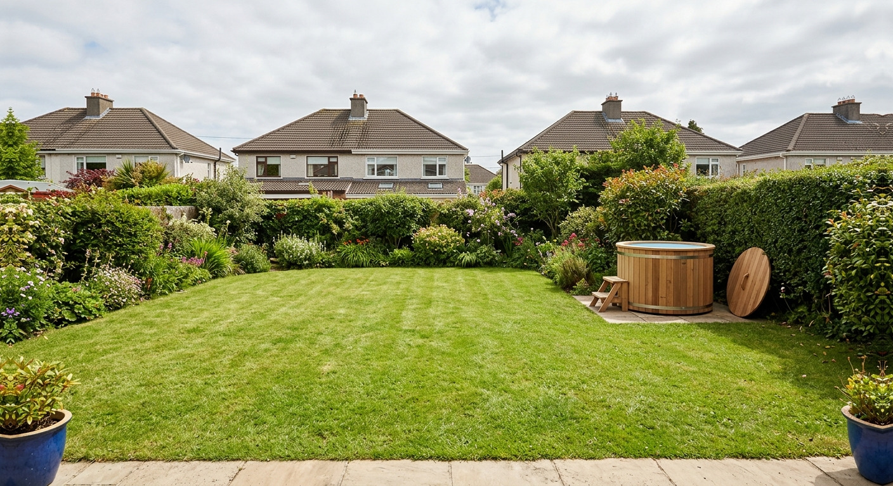

Visualisation© Irish Sauna Company (opens in a new tab)
Irish Sauna Company
The Island Collection of garden saunas, designed and handcrafted to order. Heaters by Harvia.
Made in Connemara, Co. Galway
What are you looking for?


AI-generated illustration
A sauna, a hot tub or a cold plunge — one thing in one part of the garden. See what each asks of your garden, then the makers who publish them.
This is the ambitious end of the idea. You don’t have to start here.
A garden sauna, a wood-fired hot tub and a cold plunge each ask something different of an Irish garden: space, a level base, a heater or a stove, and somewhere for the water to go. Below are published prices for one checked product of each, what each one needs, and how the planning limits read — the 30 m² garden-structure limit, 25 m² of open garden left behind, and the separate 25 m² Building Regulations threshold. Thinking of a garden room or a garden home instead? The Living in the Garden Discovery covers those rules.
A garden retreat doesn’t have to mean transforming the whole garden. It can begin with one thing in one part of it — and these three ask very different things of a garden. Each price below is one product PlotNua checked, not a finished-project cost.

A small timber cabin with a heater. It looks as though it needs the most room; it doesn’t necessarily.
Example price€8,700 including VAT — Hansa24 Lisette sauna cabin, about 7.6 m²
Key considerationAsk which heater it comes with: electric needs a Registered Electrical Contractor, wood-fired needs a flue. The cabin needs a level, load-bearing base.
This is the one that looks as though it should need the most room. It doesn’t necessarily.
As a sense of scale, Hansa24’s Lisette sauna cabin is 3.65 metres by 2.08 metres outside — about 7.6 m² — with a 7 m² room area over two rooms, at a published €8,700 including VAT.
That is one specific product, not a general sauna size. Other models are smaller and larger, and some makers do not publish dimensions at all. The maker directory below lists each maker’s published products and prices.
Hansa24 does not publish which heater comes with it. Electric heating brings electrical work with it; a wood-fired stove brings a flue. Either changes what has to be accommodated, so settle the heater before the base.
Those are product prices, not finished-project costs. The base, electrical connection or other site work may add to what you actually pay.

Water heated by a wood-burning stove rather than an electric spa system.
Example priceFrom €4,340 — Gardenhouse24 Hot Tub DeLux 220, about 4 m²
Key considerationClose to 1,900 kg when full, plus a stove and flue to place safely.
This takes a different route. The water is heated by a wood-burning stove rather than an electric spa system, so there is no electrical connection evidenced for the standard tub itself.
The verified Gardenhouse24 example is about 2.26 metres across — roughly 4 m² of garden space before allowing for access and the stove — with a published base price of €4,340.
But the starting price is not the whole story. The configuration PlotNua checked reached €6,430 once selected options were added. A bubble system alone adds €650.
Those are product prices, not a finished-project cost. The tub still needs a suitable base, space for its wood-burning stove and flue, and safe access around it. Delivery, site preparation and other work should only be treated as included where the supplier explicitly says so.
So the trade-off is different from the sauna: less dependence on electricity, but more to think about around weight, fire and where the stove sits.

The smallest of the three: a cold-water tub at the edge of the garden.
Example price€1,699 — Timbertrove cold-plunge tub, about 1.2 m²
Key considerationNeeds level ground and somewhere for the water to go. No chilling or filtration was evidenced for this model.
This is the smallest intervention of the three.
The verified Timbertrove cold-plunge tub is 1.25 metres across — about 1.2 m² of garden space — and just over a metre high. Its published price is €1,699.
That price includes the timber tub, waterproof liner, stainless-steel bands, access ladder and matching timber lid. It is available flat-packed or fully assembled, and the supplier states delivery throughout Ireland.
What it does not establish is just as important. PlotNua found no evidence that this model includes mechanical chilling or filtration, and no electrical requirement is published for it. It should therefore be understood as a simple cold-water plunge tub, not a self-chilling spa.
It still needs a suitable level base and somewhere sensible for the water to go when it is emptied.
That is the scale shift: a private cold-water plunge can be a roughly 1.2 m² object at the edge of a garden, rather than a constructed pool.
| Compact saunaHansa24 Lisette sauna cabin | Wood-fired hot tubGardenhouse24 Hot Tub DeLux 220 | Cold plungeTimbertrove Cold Plunge & Ice Bath | |
|---|---|---|---|
| Space | About 7.6 m²: 3.65 m by 2.08 m outside; 7 m² inside, two rooms | About 4 m²: 2.26 m across, plus a chimney | About 1.2 m²: 1.25 m across, a metre high |
| Product price | €8,700 including VAT. Heater not stated | €4,340; €6,430 as configured. Bubbles €650 | €1,699. None published as extras |
| Power or heat | A heater, type not published: electric needs an electrician, wood a flue | Wood. Electricity only if you add bubbles, lights or a filter | None. No chilling or filtration evidenced |
| Water | None published | 1,650 litres. No supplier says where it should go | Fill it, use it, drain it. The route is yours to plan |
| Base and installation | Level and load-bearing. Installation not published: ask the maker | Roughly 1,900 kg full; a concrete base is sold. Installation a paid option | Level ground. Flat-packed or assembled |
| Planning | A building: the garden-building rules apply | On an existing patio it appears to fall outside the rules; dig or build around it and it is back in | Stood on the ground, as for a hot tub on a patio |
| Upkeep | No routine published | The anti-rot warranty depends on the maker’s care guidelines | No water-treatment routine published |
The cheapest way in is €1,699 and about a square metre. Ask which heater the sauna comes with: it decides between an electrician and a flue. And the heaviest thing here is the water, not the structure.
Prices come from the suppliers’ own pages, read in September 2026, and they change. VAT is only shown where the supplier states it. None of these is a finished-project cost: bases, connections and site work are quoted separately. Planning is a reading of the rules, not a decision — see What you need to sort out.
Summerhouse24 Ireland (Hansa24 Group) publishes the sauna’s size and price above. Gardenhouse24 trades here as ABC Gardenhouse IRL Ltd and publishes the hot tub and its options. Timbertrove works from O’Kelly’s Sawmill in Dublin and publishes the cold plunge. They are named here because they publish, not because PlotNua rates them. No ranking, no recommendation. Other Irish suppliers exist that PlotNua has not checked.
PlotNua has no commercial relationship with the three suppliers compared here. Everything quoted here was read from the suppliers’ own public pages in September 2026.
That depends on your garden more than on the product: the clear space you have and where it is, whether power and water reach it, the ground, and what is already built there. PlotNua does not yet have a property check for garden retreats, and nothing on this page assesses your property. Start with these:
One thing in one corner is a complete answer, and for most gardens it is probably the right one. Some people keep going: a tub one year, a sauna the next. PlotNua cannot tell you which of those steps your garden would take.
Saunas, hot tubs and cold plunges from makers whose published products PlotNua has checked.
Makers appear in this gallery when they have licensed their imagery to PlotNua. The order changes on every visit, and inclusion is not a recommendation.
Visualisation© Irish Sauna Company (opens in a new tab)
The Island Collection of garden saunas, designed and handcrafted to order. Heaters by Harvia.
Made in Connemara, Co. Galway

Visualisation© OGNYX (opens in a new tab)

Photograph© Tanktribe (opens in a new tab)
7
makers in this Discovery, A to Z.
Every maker in this Discovery, A to Z. Makers that have not licensed imagery to PlotNua are listed without pictures.
The Island Collection of garden saunas, designed and handcrafted to order. Heaters by Harvia.
Visualisation© Irish Sauna Company (opens in a new tab)
Outdoor barrel and cube saunas, wood-fired hot tubs and cold plunge tubs.
Visualisation© OGNYX (opens in a new tab)
Outdoor saunas, hot tubs and cold plunges.
The wood-fired WILD TUB, and the ACTIVE, CORE and FLOW cold plunges.
Photograph© Tanktribe (opens in a new tab)
Outdoor saunas, hot tubs and cold plunges.
Current commercial relationship: PlotNua receives a referral commission on qualifying purchases made with a PlotNua code. It does not affect how makers are shown.
Saunas, hot tubs and cold plunges from makers whose published products PlotNua has checked. Makers are never ranked; open one to see its products and the prices it publishes.
Only products PlotNua’s research currently makes public are listed; products still being checked are not shown. Makers are not ranked, and their order is shuffled on every visit. Some makers have commercial arrangements with PlotNua, including referral commissions. These arrangements never influence which makers are listed, their order or PlotNua’s independent assessments. Commercial relationships are identified where relevant. Current commercial relationship: TimberIN (referral commission on qualifying purchases made with a PlotNua code). Listings come from each maker’s own published product pages; “See it on” opens that page in a new tab.
Product images: © Irish Sauna Company, © OGNYX, © Tanktribe, shown as supplied by each maker. Images labelled “Visualisation” are computer-generated, not photographs.
A sauna cabin is a building. You put it up, so the garden-building rules apply to it.
A hot tub you stand on an existing patio is usually different. You are not building anything — you are putting something down. On the face of the rules, that is not the kind of work planning law is about.
Two things change that. Dig a hole for it and you are excavating. Build a deck or a shelter around it and you are building. Either way you are back inside the rules.
That is the useful answer. The rest of this section is why, and where it stops being that simple.
The Planning and Development Act only bites on two things: carrying out works, or changing how land is used. It lists what counts as works — building, digging, knocking, extending, altering, repairing, renewing — and putting an object down is not on the list.
That one omission is what separates a sauna cabin from a hot tub, and a hot tub from a sunken one.
This is how the rules appear to read. It is not a decision by your council, and only a council or An Coimisún Pleanála can give you one of those.
And watch the services. Running a cable or a pipe underground means digging, so the connection can need permission even when the tub itself does not.
For a sauna cabin, two limits and one condition:
Your existing shed counts towards the 30, so you may have less room than you think. The full conditions are on Living in the Garden.
Building Regulations are a separate rule with a separate number, and it is 25 m². Under that, a detached garden building is outside them — but only if it is also standing on its own, within the height limits, and used just for relaxing or storage rather than for a business. Most saunas are well under 25 m², so for most people this is one less thing to worry about. Go bigger, attach it to the house, or run it as a business, and the Building Regulations apply in full.
We looked for Irish decisions about garden saunas and hot tubs. We found one: ABP-322192-25, from July 2025. A 7.3 m² caravan run as a paying sauna in a side garden in Sandycove, along with screen fencing, a kiosk and a shelter. It was allowed to stay, for three years only, because a caravan is not a permanent building.
What it tells you: a sauna people pay to use can end up in the planning system, and the inspector treated “sauna” as a use the local plan simply does not list, to be judged case by case.
What it does not tell you: we are not saying the paying customers alone are what made permission necessary. The application covered the caravan, the fencing, the kiosk, the shelter and the site works together, and the decision does not separate them.
It is also not a Section 5 declaration, and it settles nothing about a private sauna, hot tub or plunge tub at home. We found no Irish decision on any of those — and we are not going to read that silence as a yes. If your plans turn on it, ask the council in writing. That is what a Section 5 declaration is for: there is a fee, and they have four weeks to answer.
A sauna heater wires into the house like a cooker, not a kettle. In Ireland that work has to be done by a Registered Electrical Contractor, and they have to give you a Completion Certificate when they are finished. Keep it. Registered contractors work to the national wiring rules, I.S. 10101, and the energy regulator prosecutes people who do this work without being registered. Ask your contractor what your heater needs. CRU · Safe Electric lists registered contractors.
The exact electrical requirements depend on your installation. A registered electrical contractor can advise you and carry out the work safely.
A wood-fired tub puts a 30 kW solid-fuel stove and a 2-metre chimney in the garden. No Irish supplier we checked publishes a clearance distance — how far it should sit from a fence, hedge or boundary. Get that in writing before you decide where it goes.
The sauna and the hot tub both need a proper base. The plunge tub needs level ground; the supplier says no more.
The hot tub is the one to watch: 250 kg empty, 1,650 litres of water, so close to 1,900 kg on about four square metres. Gardenhouse24 sells a concrete base and quotes for the foundation separately.
A hot tub fill is 1,650 litres. No Irish supplier page we read says where that water should go. The plunge tub has a drain outlet, but the route is your problem, and emptying into the same corner will show in the lawn.
Gardenhouse24’s five-year anti-rot warranty depends on following its care guidelines, and no supplier publishes a water-treatment routine. Ask before you buy.
Start with the simple sum. A 9 kW heater running flat out for an hour uses 9 units of electricity. Multiply that by what you pay per unit — the figure on your own bill, not an average.
At an illustrative 35c a unit, that hour comes to €3.15. That figure is one hour of continuous 9 kW operation at an illustrative rate, not a forecast of your bill.
Real use is usually less. The heater runs flat out while the cabin warms up, then the thermostat switches it on and off to hold the heat. So what you actually use depends on how long it runs and how much it cycles — which depends on the cabin, the insulation, the weather and how long you leave it on. We are not going to put a percentage on that and pretend it is precise.
One thing to watch in other people’s running costs: standing charges belong to your house, not to your sauna. You pay them whether or not you ever switch the heater on, so a figure that folds them in makes a session look dearer than it really is.
Not established. We found no Irish insurer or industry body publishing a position on a garden building with a heater, a garden stove, or a large vessel of water.
The CCPC says buildings cover usually includes outbuildings such as a shed, that improving your home may mean raising your cover, and that exclusions vary. General guidance, and it does not cover any of this.
Tell your insurer before you buy. Ask about the structure, its contents, your liability if someone is hurt, and whether a stove or a lot of water changes anything.
Every figure above came from a named source, on a stated date.
The real question is not which sauna to buy. It is what kind of retreat your garden could take — your clear space and where it is, whether power and water reach it, the ground, what is already built there. PlotNua is building a check that asks those questions. It is not ready, and nothing on this page assesses your property.
Recommendations cannot be bought, and payment never determines who appears or ranks more highly.